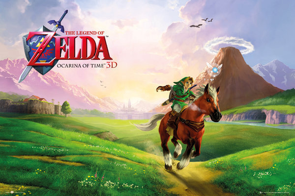

Ocarina of Time: el molde del juego moderno El título que definió cómo se diseñan las aventuras en 3D Publicado: 13/12/2025  La vida en la granja avanza día a día, mostrando el enfoque tranquilo y progresivo del juego. Ocarina of Time no solo fue un éxito comercial, fue un punto de inflexión en la historia de los videojuegos. Introdujo sistemas que hoy parecen normales: fijar objetivos en combate, mundos 3D bien estructurados y una narrativa integrada al gameplay. Su influencia sigue presente décadas después. Muchos juegos modernos usan ideas que este título estableció por primera vez. No es recordado solo por nostalgia, sino porque redefinió cómo se diseñan los juegos de aventura en tres dimensiones.
Silksong: el peso de una gran expectativa Cómo una secuela independiente se convirtió en uno de los lanzamientos más esperados Publicado: 13/12/2025 Hornet se mueve por un mundo hostil, reflejando el estilo rápido y exigente del combate. Hollow Knight: Silksong es la secuela de Hollow Knight y uno de los videojuegos más esperados de los últimos años. Mantiene el estilo metroidvania, con exploración no lineal, combates exigentes y una narrativa ambiental que no lo explica todo, sino que obliga al jugador a interpretar. La protagonista, Hornet, cambia la forma de jugar: es más rápida, más ofensiva y requiere mayor precisión. La enorme expectativa alrededor de Silksong demuestra el impacto del primer juego y cómo un estudio independiente puede competir en relevancia con grandes compañías sin necesidad de marketing agresivo.
Stardew Valley: crecer sin prisas Un juego que demuestra que la calma y la constancia también pueden ser adictivas Publicado: 13/12/2025 Hornet se mueve por un mundo hostil, reflejando el estilo rápido y exigente del combate. Stardew Valley es un juego de simulación y rol donde el jugador hereda una granja abandonada y decide cómo reconstruirla. No hay prisa, no hay presión artificial: el progreso depende de la constancia y la planificación. Esa libertad es la clave de su éxito. El juego destaca porque convierte tareas simples —cultivar, pescar, socializar— en un sistema profundo. Cada decisión tiene consecuencias a largo plazo. Además, fue creado casi por completo por una sola persona, lo que demuestra que no se necesita un gran estudio para hacer un juego influyente, sino una visión clara y bien ejecutada.